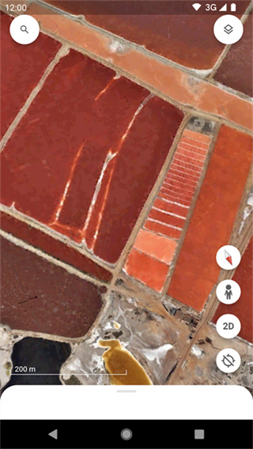
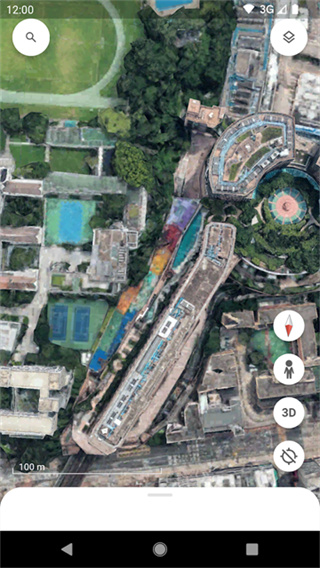

关于 Google Earth，这 9 个问题替你问完了
从版本选择、核心功能到 Voyager 专题和 Earth Studio 动画，9 组问答覆盖 Google Earth 上手前最该搞清的事
整理一篇关于 Google Earth 的快问快答，把从新手到进阶最常见的疑问打包一次说清。
Google Earth 到底是什么？和高德百度地图有啥不同？
Google Earth 是 Google 做的一款三维地球浏览工具——把 NASA 卫星影像、航拍照片、街景 360° 全景、3D 地形和建筑全部拼在一个可自由旋转缩放的球体上。它和高德百度地图最大的区别是：地图是"平面导航工具"，Google Earth 是"沉浸式地球观测工具"。你可以飞到地球任何一个角落，倾斜视角看山脉起伏，拖动时间轴看同一地点十年间的变化，甚至配合手机陀螺仪走进街景里 360° 转头看四周。
Google Earth 有三个版本：Pro 桌面版（Windows/Mac/Linux，功能最完整）、网页版（直接在 Chrome 里打开 earth.google.com，免安装）、移动端 App（iOS 和 Android，便携场景）。三个版本都能从google earth官网下载或打开，共享同一个 Google 账号数据，标注的地标和项目在各端同步。

免费还是付费？有没有阉割版？
全版本免费，没有付费版。Pro 以前是要收费的专业版，现在 Google 把它完全开放了——包含 GIS 数据导入、批量地理编码、Excel 地址批量转地标这些曾经的付费功能。三个版本之间没有付费墙阻隔，区别只在于功能集合：Pro 最完整，网页版和移动端各有裁剪，但核心的浏览、标注、测量、Voyager 专题都是全功能开放。
装哪个版本最合适？
看使用场景，三个版本各有分工：
- Pro 桌面版：适合需要完整功能的用户——地理老师做教学演示、规划师画地块测面积、GIS 从业者导入 Shapefile 数据、研究者做批量地标。功能最全，有飞机模拟器（FAA 认证的飞行训练工具）、飞行 Tour 录制、全格式数据导入。
- 网页版：适合临时用、不想装软件的人。打开 Chrome 就能用，自带 Earth Studio 动画工具（Pro 版没有），但测量工具只有基础功能，没有 GIS 数据导入。
- 移动端 App：适合出门在外、旅游前做攻略、外业调查现场标注。街景配合陀螺仪 360° 转头的体验是桌面版给不了的，但没有飞机模拟器、没有 Earth Studio、测量工具只有距离和面积的基础版。
一个实用的搭配：家里电脑装 Pro 做深度工作，手机装 App 出门查地点，网页版用来做 Earth Studio 动画——三个版本的安装包直接从官方下载就行。
最值得用的核心功能有哪些？
如果只能挑几个，这四个功能是 Google Earth 的独特价值，其他地图类工具做不到或者做不好：
历史影像时间轴：任何地点都能拉一条时间轴，看卫星拍摄的历史画面——比如你家小区十年前是什么样，亚马逊雨林某区域五年间退了多少，北京城区 2000 年和现在的建成区对比。这是做变化分析、教学演示最强的工具。
街景 360° 沉浸式浏览：配合手机陀螺仪，拿着手机在街景里转头看四周，效果和 VR 体验接近但不需要任何额外设备。旅游前用这个功能看酒店周边、景点入口，比看平面照片靠谱得多。
面积和距离测量：在 Pro 版里画多边形就能实时算面积——顶点越密越精确，球面三角计算已经考虑了地球曲率，远比在平面地图上估算靠谱。测量结果可以保存到位置面板、右键属性查看数据、导出 KML 分享。适合买地规划、农田面积估算、城市建成区对比这类场景。
地标、路径、多边形标注：在地球上任何位置右键就能加地标、画路径、圈区域，每个标注可以写详细说明、附加照片、设置自定义图标。Pro 版支持从 Excel 批量导入地址转地标，这是做项目管理、调研采样点记录的利器。

Voyager 专题是什么？和普通图层有啥区别？
Voyager 是 Google Earth 里一个精心策划的专题故事合集——上百个由科研机构、公益组织、媒体机构制作的引导式浏览故事。每个故事是这样的结构：封面介绍 → 5-15 个按顺序排列的地标标点 → 每个标点飞到指定位置、弹出图片视频和文字解说 → 点"继续"自动飞下一个标点。就像有人拿着地球仪给你讲故事。
它和普通公共数据图层的区别：普通图层是静态数据叠加（人口密度、国界、气候带），你自己开关调透明度；Voyager 是主题化的完整故事序列，不能编辑但内容质量很高。主题覆盖自然环境（海平面上升、亚马逊雨林砍伐）、文化历史（丝绸之路遗迹、世界文化遗产）、教育专题（板块构造、气候带划分）、公益主题（考拉栖息地消失、濒危物种保护）。
适合谁用？地理老师当教学资源——在课堂上直接放 Voyager 的板块构造故事，学生跟着飞一圈比看 PPT 上的静态地图直观太多。学生自己浏览也有沉浸感。公益活动组织方可以找对应主题的故事当素材。
Earth Studio 动画工具要学吗？和 Pro Tour 什么关系？
Earth Studio 是 Google Earth 网页版独有的在线动画工具——类似 After Effects 但只做地球相机动画。你在浏览器里给相机的位置（经度、纬度、高度）、倾斜角度、方向、视野广角这些属性打关键帧，时间轴自动在关键帧之间做平滑过渡，完成后渲染出图片序列（再用其他工具合成视频）。
Pro 版的飞行 Tour 是录屏式的——你手动操作地球，它自动记录你的飞行路径，适合快速演示。Earth Studio 是关键帧式的——每帧精确控制参数，精度高很多但学习曲线陡。入门建议：先在 Pro 版做几个 Tour 熟悉飞行动感，再去 Studio 只练相机位置、倾斜、方向三个属性的关键帧动画，从简单的"全球飞到中国再飞到北京天安门"开始——遇到参数搞不定就去google earth文档翻一下。
Studio 适合做新闻地理动画、宣传片、品牌视频这类需要精确控制的场景；Pro Tour 适合教学演示、带讲解的飞行游览这类快速录制场景。
移动端和桌面版功能差多少？会不会不够用？
移动端 App 是 Pro 和网页版的功能交集，兼顾便携和实用性，核心功能都在：卫星影像 + 3D 地形 + 3D 建筑、历史影像时间轴、街景 360° 沉浸式浏览、Voyager 专题、地标路径多边形标注、公共数据图层。和桌面版共享 Google 账号后，移动端做的标注会自动同步到云端，在 Pro 和网页版的 Projects 里继续编辑。
裁剪掉的功能：Earth Studio 动画、飞机模拟器、飞行 Tour 录制、GIS 数据导入只有 KML/KMZ（没有 Shapefile）、测量工具只有基础距离和面积、没有批量地理编码。对于日常查地点、做简单标注、旅游攻略这些场景完全够用；如果要做专业的 GIS 分析或批量数据导入，还是得回到 Pro 版。
移动端独有的体验是街景配合陀螺仪 360° 转头——拿着手机站在家里就能"走进"东京街头或冰岛的黑沙滩转圈看四周，这个桌面版做不到。
有什么坑或注意事项？
几个容易踩的点：
- 测量时别在倾斜视角下操作：面积和距离测量必须在正俯视视角下进行，工具打开时会自动切换。在倾斜视角下画出来的边界误差很大。
- 移动端离线能力有限：App 会缓存已浏览地点的数据，信号不好时之前看过的地点还能显示，但新地点必须联网。不能主动下载离线包。
- Pro 版数据同步有单向性：桌面版从 Shapefile 导入的图层在移动端可能看不到（功能裁剪导致），反过来移动端的标注在桌面版都能正常编辑。
- Earth Studio 只有 Chrome 完整支持：用 Firefox 或 Edge 打开可能出现渲染异常或功能缺失。
- 面积精度看顶点密度和底图分辨率：沿边界点的点越密越精确，高分辨率城市区的底图精度远高于偏远地区。地球曲率已经在球面三角计算里考虑了，不用担心高纬度误差。
最后一句总结，值不值得装？
如果你的工作或学习涉及地理信息、教学演示、实地调研、旅行规划，或者单纯想换个角度看看这颗星球——Google Earth 免费、全平台、功能不缩水，值得装。Pro 版当主力，手机上备一个 App，感兴趣再去网页版试试 Earth Studio 动画，这一套组合没有理由不试。
想系统了解各版本的操作细节，可以去相关资料找找，安装包直接下载就行。这套工具在三个仓库都有备份，Gitee 和 GitCode 国内访问更顺畅，GitHub 上维护着完整的资料源。